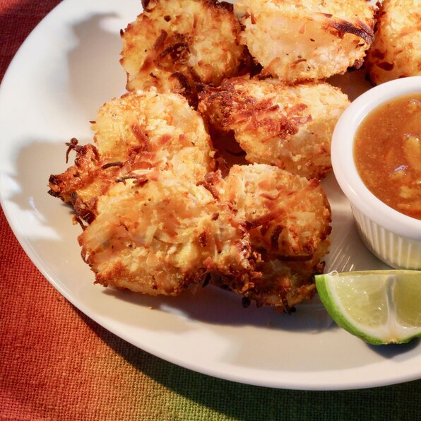

Air Fryer Coconut Shrimp

Description
Coconut shrimp come out great in the air fryer, and are served with a simple spicy honey-lime dip.
This recipe replaces the need to fry food in oil and is siginfically lower in calories.
Ingredients
- ½ cup all-purpose flour
- 1 ½ teaspoons ground black pepper
- 2 large eggs
- ⅔ cup unsweetened flaked coconut
- ⅓ cup panko bread crumbs
- 12 ounces uncooked medium shrimp, peeled and deveined
- cooking spray
- ½ teaspoon kosher salt, divided
- ¼ cup honey
- ¼ cup lime juice
- 1 serrano chile, thinly sliced
- 2 teaspoons chopped fresh cilantro
Directions
- Stir together flour and pepper in shallow dish. Lightly beat eggs in a second shallow dish.
Stir together coconut and panko in a third shallow dish. Hold each shrimp by the tail, dredge
in flour mixture, and shake off excess. Then dip floured shrimp in egg, and allow
any excess to drip off. Finally, dredge in coconut mixture, pressing to adhere.
Place on a plate. Coat shrimp well with cooking spray.
-
Preheat air fryer to 400 degrees F (200 degrees C). Place 1/2 the shrimp in the air fryer
and cook about 3 minutes. Turn shrimp over and continue cooking until golden, about 3 minutes
more. Season with 1/4 teaspoon salt. Repeat with remaining shrimp.
-
Meanwhile, whisk together honey, lime juice, and serrano chile in small bowl for the dip.
-
Sprinkle fried shrimp with cilantro and serve with dip.
Orignal Source
recipe link